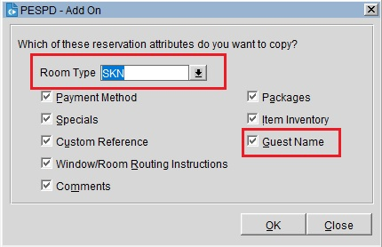

Если у вас бронируют несколько номеров, то для того, чтобы каждый раз не создавать бронирования через Reservations → New Reservation, вы можете воспользоваться опцией Add On.
Сначала создаем одну бронь и, после присвоения ей шестизначного номера брони, выбираем Options → Add On. Откроется следующее окно с настройками, где вас спросят, что вы хотите скопировать из изначальной брони.

Тут можно сразу поменять категорию для другого номера, если это требуется, и/или если другой номер на другую фамилию, то можно снять галочку Guest Name. Другие опции также могут быть полезны. Либо, можно оставить все как есть и поменять уже в дальнейшем.
После этого откроется окно бронирования, в котором нужно нажать Save для присвоения нового шестизначного номера брони.